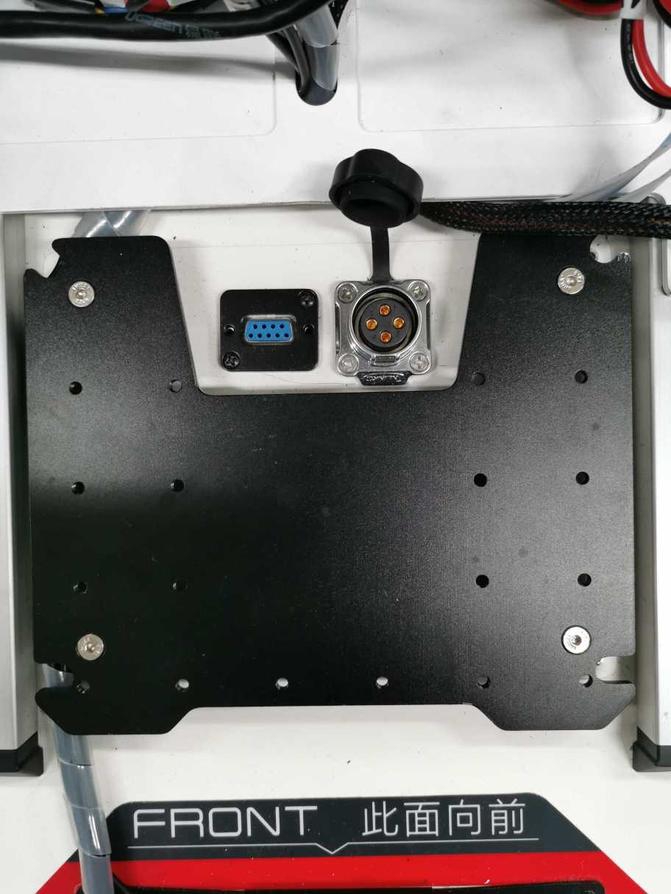
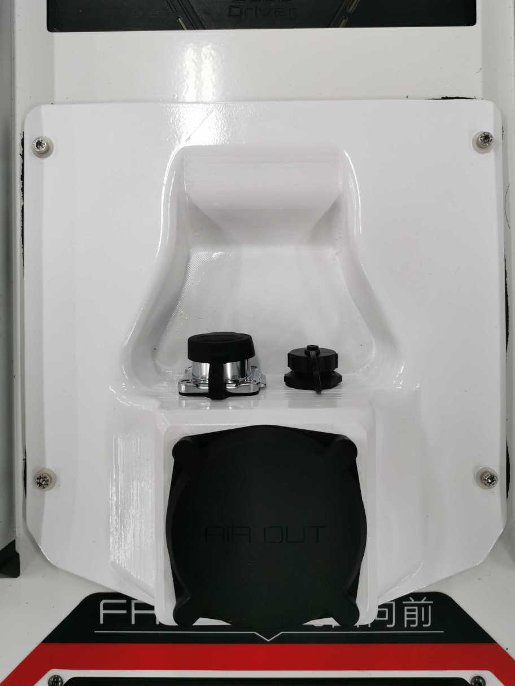
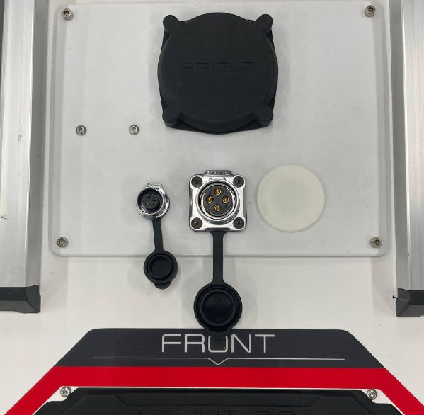
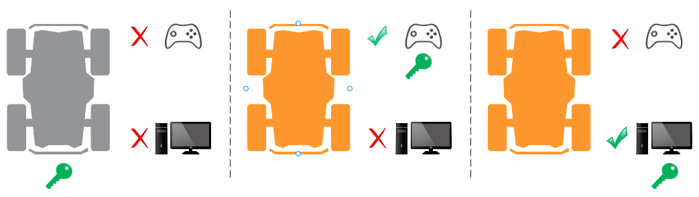
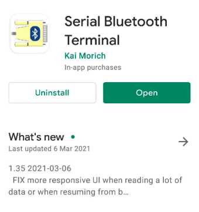
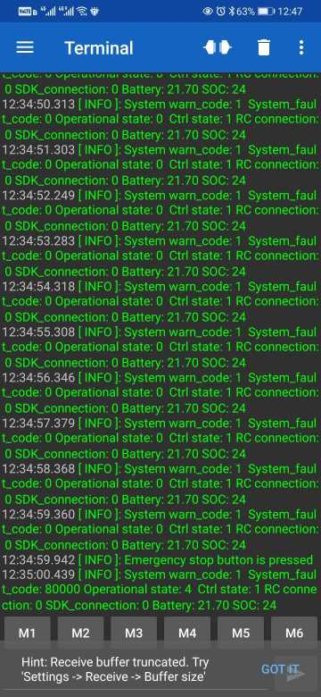

Scout V2.5 (WR)
Revision History
Revision |
Date (DD/MM/YYYY) |
Author |
Changes |
|---|---|---|---|
1 |
08/11/2022 |
Kee Jin |
Initial release |
1. Getting Started
Please read the information from Getting Started before attempting to operate the robot. It will help to keep both you and your robot safe from potential damages/injuries.
2. Specifications
The Scout V2.5 is a modified version of the original Scout V2.0. It uses a different main controller and runs firmware developed by Weston Robot.
Steering |
Skid steer |
Size |
930mm x 699mm x 349mm |
Minimum Ground Clearance |
135mm |
Operating Temperature |
-10 - 40 ℃ |
IP Rating |
IP22 (IP44, IP64 available upon request) |
Maximum Speed |
1.5m/s |
Maximum Angle of Tilt |
<30° |
Encoder |
Magnetic 2500ppr |
Charging Time |
3h (24V/30Ah), 6h (24V/60Ah) |
User Power |
24V, 10A |
Weight |
67kg |
Rated Load |
50kg (tested on surface with friction coefficient of 0.5) |
Motor |
4 x 400W BLDC |
2.1 Robot Modifications
The following sections summarises key modifications made to the Scout V2.0.
2.1.1 Hardware Changes
Item |
Standard V2.0 |
V2.5 Rev.0 |
V2.5 Rev.1 |
|---|---|---|---|
Top Interface Panel |
CAN+POWER, RS232 |
CAN+POWER, MicroUSB |
CAN+POWER, Peripheral CAN |
Motor Driver |
Driver x 4 |
2-in-1 Driver x 2 |
2-in-1 Driver x 2 |
Battery |
24V, 30Ah |
24V, 60Ah |
24V, 60Ah |
You can see the different versions of the top control panels in the following picture (the standard V2.0: top left, V2.5 Rev.0 top right, V2.5 Rev.1 bottom left):
{kind=link}

{kind=link}

{kind=link}

- The pinout of CAN+POWER connector remains the same in all versions:
Pin 1 - VCC (23V - 26.5V)
Pin 2 - GND
Pin 3 - CAN High
Pin 4 - CAN Low
For V2.5 Rev.0, the MicroUSB port is for firmware upgrade only
For V2.5 Rev.1, the peripheral CAN connector (the smaller one) can be used for extension, such as for adding ultrasonic sensors, TOF sensors
2.1.2 Software Changes
Defined new CAN communication protocol by Weston Robot (wrp_zbus)
Deprecated RS232 support for robot control and monitoring
Introduced the concept of control token for enhanced safety of robot operation. The working principle of this control token mechanism has been explained in section 3.
The SDK (wrp_sdk) is now provided as a Debian package for easy and convenient installation
For V2.5 Rev.0, the ROS interface is provided with the “wr_mobilerobot_ros” package
For V2.5 Rev.1, the ROS interface is provided with the “wr_mobilerobot_ros” package
3. Control Token Mechanism

The robot can be controlled manually with a remote controller or programatically through the CAN interface from a Linux computer. Previously, there was no explicit way for the onboard computer (the navigation system) to know whether it can control the robot base or not and possible reasons why the robot doesn’t move even though it has commanded the robot to do so. We introduced the concept of control token to provide finer access control of the the robot base. The following points outline the working principle of our control token mechanism:
There is only one control token available and the token is initially held by the robot controller (command from either remote controller or CAN bus will not be responded)
Only the entity who has gained the control token will be able to control the robot to move
The remote controller has a higher priority to take the control token than the CAN bus. This means the operator can always take over control from the onboard computer using the remote controller
You can register a callback function through the SDK to get notified when the control token is taken away. Please note that you need to keep callback function short and non-blocking. This callback function is supposed to be a notifier only and complicated handling functionalities should not be implemented inside
Once the operator has finished manual control, the operator can switch the control mode back to standby and the control token will be returned to the robot controller. (Switching off of remote controlle will return the control token to the robot controller as well). The SDK will have to request to gain the control token again to resume control
An error code will be returned to the user if the SDK fails to gain the control. Possible reasons include hardware failture, robot in manual control mode etc.
Only one SDK instance or ROS node is allowed to communicate with the robot at a time

With this new concept of a control token, the functional mappings of “SWA” and “SWB” on the remote controller are now slightly different:
Initally SWB stays at the up position and the robot is in standby mode (control token kept by the robot)
The remote controller will gain the control token by placing SWB at the middle position, setting the robot to be in the manual control mode
Once the operator has finished manual control, the operator can switch the control mode back to standby by placing SWB to up position (Switching off the remote controller will return the control token to the robot controller as well).
SWA acts as a wireless E-Stop. If SWA is switched to down position, the control token will remain at robot controller, neither remote controller nor SDK would be able to control the robot until SWA is returned to up position
4. Key Operation Information
4.1 System State Message
Key information about the robot can be extracted from the system state message:
rc_connected - indicates whether remote controller is connected:
1 - RC connected
0 - RC disconnected
error_code - possible system codes are as follows:
Value |
Error Code |
Description |
|---|---|---|
0x00000000 |
kNone |
No errors |
0x00000001 |
kBatteryLowWarn |
Battery level low (warn) |
0x00000002 |
kMotorOverheatWarn |
Motor overheating (warn) |
0x00000004 |
kMotorOvercurrentWarn |
Motor overcurrent (warn) |
0x00010000 |
kBatteryLowFault |
Battery level low (fault) |
0x00020000 |
kMotorOverheatFault |
Motor overheat (fault) |
0x00040000 |
kMotorOvercurrentFault |
Motor overcurrent (fault) |
0x00080000 |
kMotorCommFault |
Motor communication fault |
Note: The 2 levels of alerts, “warn” and “fault” will be discussed in section 4.2.
operational_state - possible states and explanations are listed in the following table
Value |
Operational state |
Description |
|---|---|---|
0x00 |
kOperational |
Robot is at normal operation |
0x01 |
kInitialization |
Robot is starting up |
0x02 |
kMaintenance |
Not applicable for now |
0x03 |
kSoftwareUpdate |
Not applicable for now |
0x04 |
kEStopActivated |
Emergency stop button is pressed |
0x05 |
kHardwareFault |
There is fault error code |
control_state: indicates which entity is in control of the robot
Value |
Control state |
Description |
|---|---|---|
0x00 |
UNINITIALIZED |
Robot is starting up / recover from estop |
0x01 |
STANDBY |
Robot is ready to be controlled |
0x02 |
RC_HALT_TRIGGERED |
Robot is halted by remote controller (SWA is pushed down) |
0x03 |
RC_MANUAL_CONTROL |
Robot is controlled by remote controller |
0x04 |
CAN_COMMAND_CONTROL |
Robot is controlled by SDK/ROS |
Note: There are other feedback messages available in addition to the system state message. Please refer to the ROS package message definitions for more details.
4.2 Buzzer Alert
There are two levels of alert: Warn and Fault. You can still control the robot when you get a warn-level alert but once a fault-level alert is triggered, the robot will stop and not respond to any motion commands to avoid possible hardware damage.
- Warn-level alert: buzzer will be triggered at a relatively low frequency (0.5Hz)
The robot can still be controlled, but the warning (buzzer) will remain until none of the warning conditions (from table below) exist
It is advised to take proper actions to get the robot back to normal
- Fault-level alert: buzzer will be triggered at higher frequency (2Hz)
The robot cannot be controlled until all faults are resolved
For recoverable faults (e.g. over-heating), the robot may first recover back to warn-level condition before returning to normal, given enough time for cooling
Conditions that may trigger the alert are listed below
Condition |
Warn |
Fault |
Warn error code |
Fault error code |
|---|---|---|---|---|
Battery |
State of Charge (SOC) < 25% |
State of Charge (SOC) < 15% |
0x00000001 |
0x00010000 |
Motor Temperature |
> 70 °C |
> 100 °C |
0x00000002 |
0x00020000 |
Motor Current |
> 25 A |
continuous 100A for 3ms (reported by driver) |
0x00000004 |
0x00040000 |
Motor Communication |
Not applicable |
Lost communication with motor drivers |
Not applicabl |
0x00080000 |
5. Resources
Scout V2.0 Manual: PDF
ROS packages:
wr_mobilerobot_ros (no longer maintained)
wrp_ros (maintained, uses newer ROS interface)
ROS2 package: wrp_ros2
Note: Scout V2.5 is incompatible with ugv_sdk and scout_ros.
6. Preview Feature
System state monitor with Bluetooth. You can download any Bluetooth serial terminal application to receive basic robot state information. We have tested the following app and you can download it from Play store.
{kind=link}

You can scan Bluetooth devices near the robot and connect to the robot controller. The device name should be similar to “WR-SC210404”.
{kind=link}

7. Firmware Upgrade
See Scout V2.5 Firmware Upgrade Guide